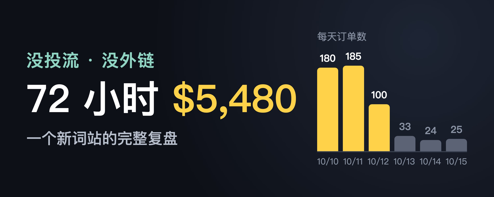
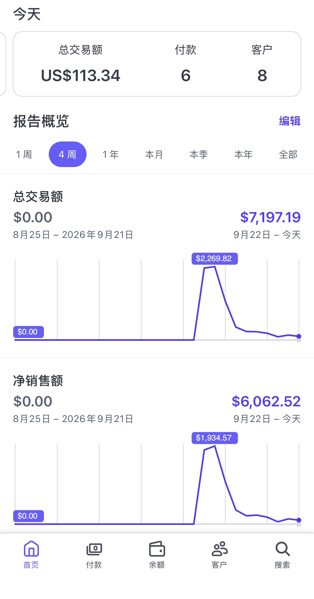
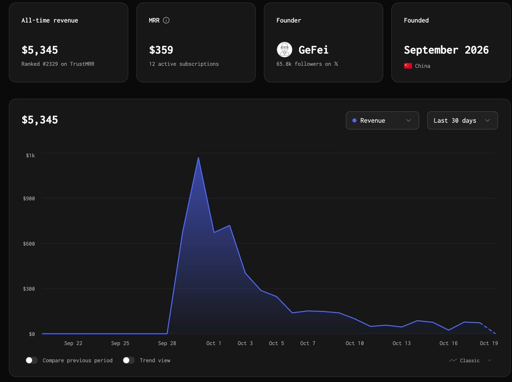
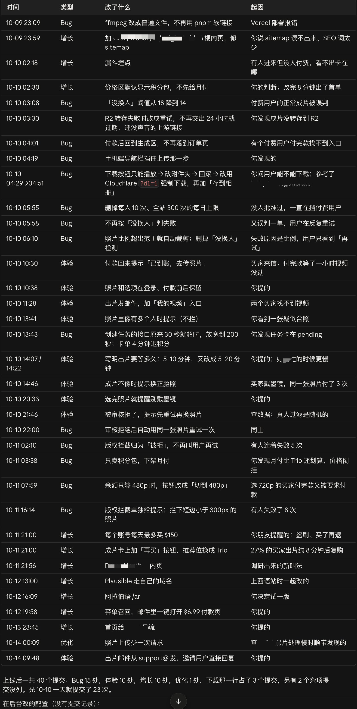
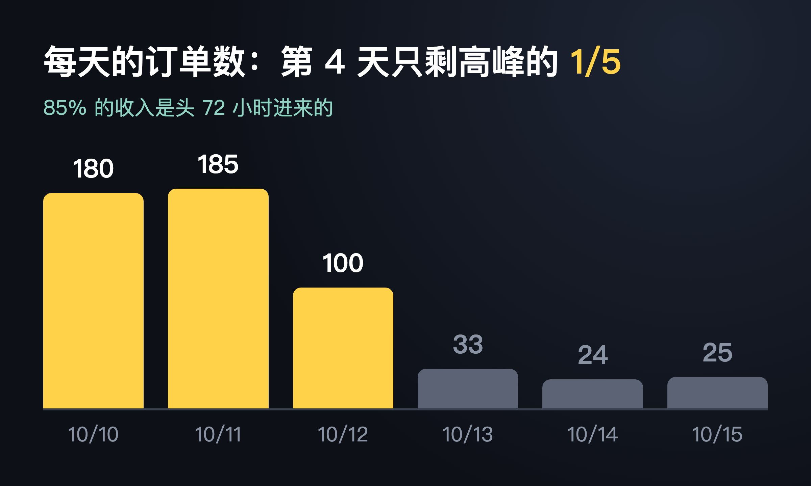
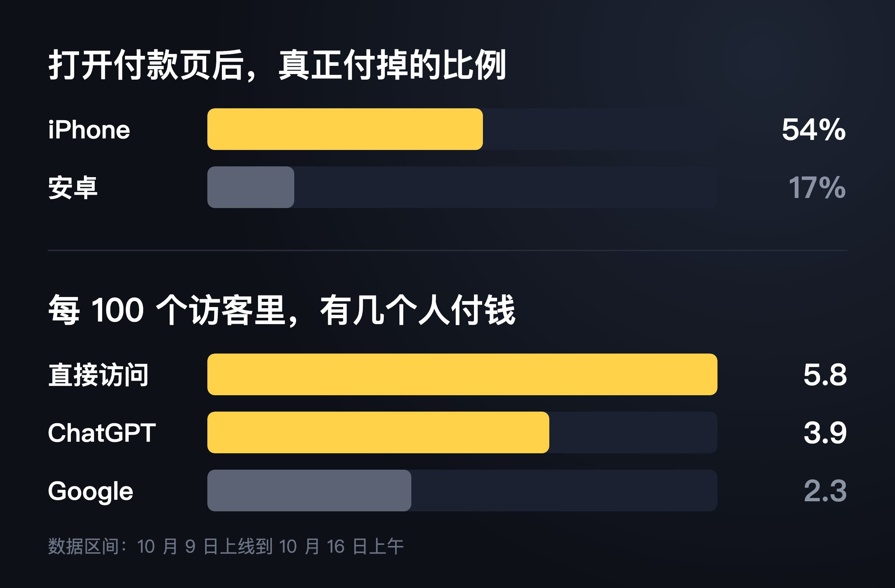

先放数据：10 月 9 号下午买的域名，第二天凌晨 2:38 出第一单，72 小时流水 $5,480，第一周 6700 多刀，到现在接近 7200 刀（Stripe 总交易额，含税）。没靠投流，也没买外链。
如果非要说这次的秘诀，就一个字：早。

简单说一下我做的是什么。10 月初，多米尼加说唱歌手 Bulin 47 的一段即兴说唱在 TikTok 上火了，很多人用 AI 把自己放进这段视频里再发出来。我的网站就干这一件事：上传一张自己的照片，生成一条你在里面说唱的 19 秒视频。
为什么这次去做新词
再解释一下「新词」：刚冒出来、还没多少网站在做的搜索词。比如一个梗刚在 TikTok 上火，大家开始搜「xxx ai」，这时候谁先有一个能用的网站，谁就能吃到第一波搜索流量和 AI 过来的流量。
新词新站这套打法我是在哥飞群里学的，包括怎么选词，选域名，做好 SEO 友好的落地页等。我们群里一直有人在做新词站。以前 AI 工具站盯的主要是新模型的名字，做的人多了，越来越卷，我后来就没怎么关注，转去做老词（已经很多人在搜、很多网站在做的词，比如 ai image generator 这样的）了。直到这次
@gefei55
飞哥在群里一条条晒新词站的出单，我才发现这块还是能做出不错的收益。
9 月底哥飞老师为了给我们教学，亲自下场做了一个新词站，目前累计收入 5345 刀。那段时间他经常在群里转发新词，很多群友跟着去做站，也都拿到了不少收益。我在旁边看得心动，但人在外面旅游，一直没动手，10 月 8 号回来才开始。

10 月 8 号：先在老站上加了一个页面
8 号早上 10 点半，良辰美老师发给我一堆新词，有 ai raindance、ai zombie 这些（都是 10 月初火过的 AI 视频梗），我回了感谢，说会好好研究。但那天手上一堆老站的事要处理，没顾上看。
下午在想要不要给 hotel lobby ai 这个词做个新站。想想已经晚了这么多天，新站估计也没量了，最后只打算在我一个老站上加个页面试试。晚上 6 点多，小群里另一位朋友做的 hotel lobby 新站也出单了。我一想，都过去这么多天了还能出单，那还是有机会，就赶紧把那个页面上了。（这个页面第二天也出单了，也算一个契机。）
10 月 9 号：去 TikTok 上找下一个词
9 号早上，我开始认真看良辰美老师给的那些词，发现都已经有挺多人在做了。现在进场能喝口汤，肉是吃不到了。我想，与其去挤一个竞争多的热点，不如去找刚起来的。
而且有心人都能发现，这一波新词基本都是从 TikTok 火起来的。那直接去 TikTok 上找，不就能更早发现吗？
带着这个想法，我把 hotel lobby、ai raindance、ai zombie 这些词一起丢给 Claude Code，让它去 TikTok 上找有没有类似的梗：用户想复刻某个爆款视频，而且复刻出来的视频本身也在火。它真的找出来几个，包括后来挺多人做的 burning bridges。我没选它，选了另一个，就是 Bulin 47。在 Google Trends 上一看，刚抬头，已经开始超过 hotel lobby 了。看了一下爆款视频，有点抽象，看不太懂，所以动作上有点缓慢。（以后要信数据，而不是自己的好恶！）
最终我拖到下午才定下买哪个域名，这点以后得改。一开始有好几个候选词，得挑一个做域名，我就把它们都放进 Google Trends 比，看哪个量最大、最像是想找工具的人在搜，中间还跑去吃了个饭。为什么说「早」呢？我去注册的时候，想要的那几个域名都还没人注册，很顺利就拿到了。
当天上线
上站本身对我来说还好，主要是测试花了好几个小时，生成的效果一直不太满意，就一直没上。到了晚上 12 点左右，老婆催我去睡觉，我才把这个自己不太满意的版本上上去，还加了一些限制和判断（比如判断成片不像，就自动给用户退款。后面看，这些都是画蛇添足）。
第一夜：8 分钟出第一单，然后一直在修 bug
本来这时候该睡了，但前一天上的那个 hotel lobby 页面出了两单，我赶紧去看，发现两个用户都没生成成功。查问题、修复、发邮件跟用户道歉，弄完已经 2:19 了。中间回头看了一眼新站，已经有人进来了，但没人付钱，我就让 Claude 赶紧在 Plausible 加上漏斗统计，看用户是在哪一步走掉的。
处理完那边，我发现新站的价格区怎么默认推订阅套餐？这种做一条视频就走的用户，谁会订阅。马上改成主推积分包。改完 8 分钟就有人下单了，20 分钟后已经有 3 个人付费。看出单这么猛，哪里还有睡意，就一直盯着后台，看用户有没有生成成功、进来了多少人。
然后就发现，有个用户明明生成成功了，网站却给他退了款。我去看了视频，挺像的啊。跟 AI 一通沟通才发现，是 Claude 之前加的那个「没换人就判失败」的判断，把付费用户的正常成片误判了。先把判定标准调松，后来干脆整个删掉。接着又发现网页特别卡，还会报 500。原因是人进来太多，数据库连接被打满了，又赶紧修。前两天基本没怎么睡，一直在修 bug、改体验。这里让 claude code 整理出我头两天修的 bug，感兴趣可以点开看看：

为了少出客服单，我还做了这几件事
- 视频一生成好就给用户发邮件，让他们知道有问题可以直接回邮件找我。
- 发邮件要退款的，一律退。觉得效果不好、想要更多积分的，也都给了。
- 盯着用户的生成任务看，有问题直接联系。这种热梗站的用户都是买了马上就用，希望立刻出结果。失败了能马上看出问题在哪，马上响应。
数据
标题里的 $5,480 是首单后 72 小时的订单标价，不含结账时加的税，也没扣退款。第一周一共 558 单、$6,434（同样是标价），393 个人付了钱，退了 22 单。

梗冒头到 Google Trends 见顶大概 4 天。85% 的钱是头 72 小时进来的，第 4 天单量就只剩高峰的五分之一。

几个出乎我意料的数：
- 打开付款页之后，iPhone 用户一半以上付掉了，安卓只有 17%。我猜是 iPhone 用 Apple Pay 一点就付，安卓用户大多没绑 Google Pay，只能手动输卡号。
- 流量一半是直接访问，Google 占三成多。ChatGPT 上线第一天就有人点进来，付款率差不多是 Google 的 1.7 倍。站上放了 llms.txt、提交了 IndexNow，不过我不确定这招有没有用，我觉得更关键的是域名和页面标题对上了大家搜的词。
- 美国访客只占四分之一，付款却占了快一半。梗是从多米尼加火起来的，那边流量排第二，但点了购买的人只有五分之一付成功。
- 退款率 3.9%，基本都是觉得「不像本人」。
可以复用的几点
主要还是快和早，再加上多跟人交流。其他几点大家看看有没有用：
- 看到苗头就动手。我选域名拖到下午两点半，现在回头看，那几个小时能省就该省。
- 模板要提前备好。那天真正写代码只有 5 个多小时，因为支付、积分、登录、埋点这些早就在别的站上修过一轮了。
- 先上线再改。上线第一天我提交了 23 次，问题几乎都是真实用户撞出来的，上线前根本想不到。
- 别让 AI 替你加限额和自动判定。「每天 300 次」和「没换人就判失败」都是 AI 自己加的，两个都挡住了付费用户。
- 按次卖，别做订阅。热点活不过一个月，$9.99 一条的单占了 92%。
- 说不像的，直接退款。我试过送积分让他们重试，最后基本还是退了。
大家问得最多的几个问题
- 你这套方法是否可复用：我说一个 case，我朋友周五看了我在 Web.cafe （哥飞的社区）的分享，立刻行动，周日就出了两单了，我自己的第二个站，目前也在赚钱，收入在 500 刀左右。
- API 花了多少：到现在 10000 多人民币。
- 有没有免费额度：没有。
- 有没有做外链：没有。
- 有没有投流：后面小额试了一下，不过还是关掉了，算了一下打不正。
- 有没有做弃单召回：做了。给 100 个打开过付款页但没付钱的人发了邮件，价格降到 $6.99，一个人都没买。
- 用的哪个模型：Seedance 2.5。
最后
不敢说自己多厉害。这次能做出来，要谢谢哥飞的新词方法，和他在群里一直晒单催着大家动手，也谢谢良辰美老师给的新词和小群朋友们一直以来的讨论，剩下的就是运气。
还有什么不清楚的，欢迎评论区一起讨论下。